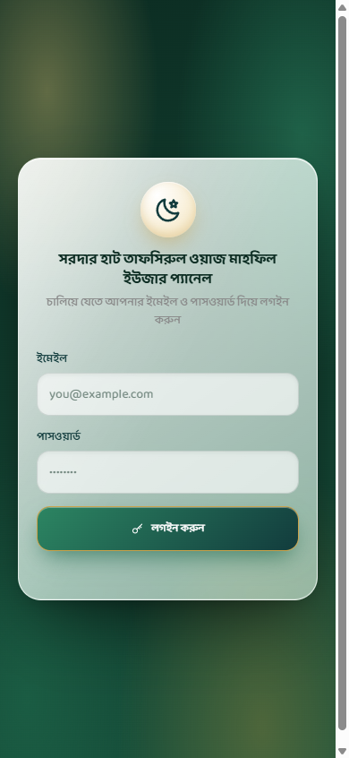
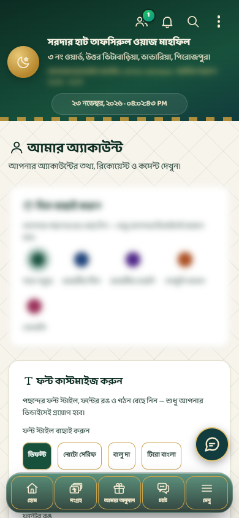
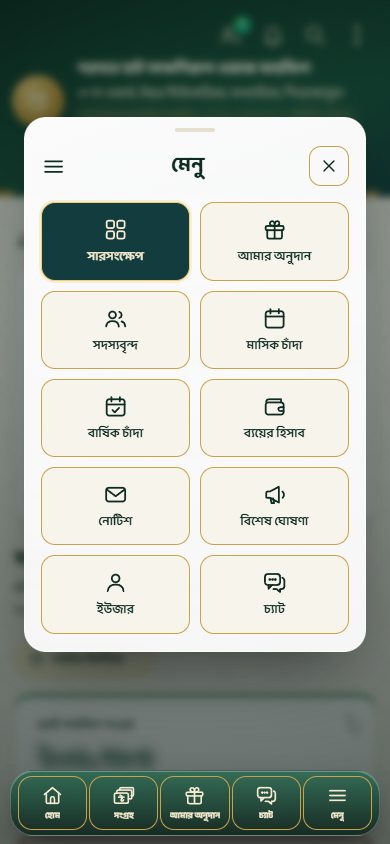
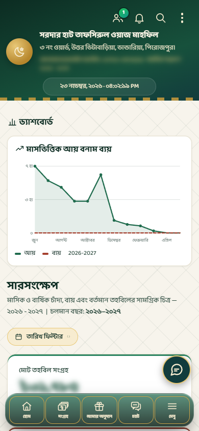
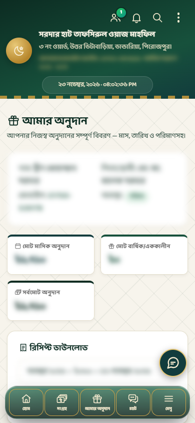
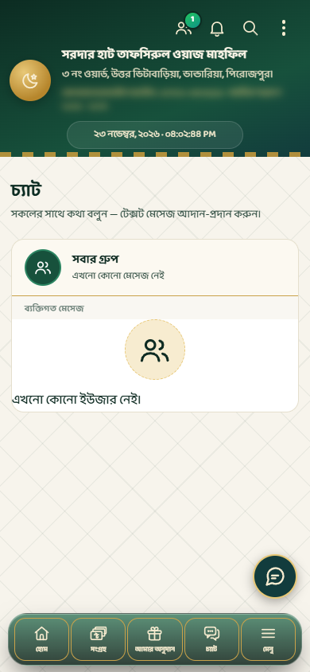

ব্যবহারকারীর নির্দেশিকা · সংস্করণ ১.২
ইউজার প্যানেল
ব্যবহার, নেভিগেশন ও সমস্যা সমাধান
১ · শুরু করার আগে
🔒 বা “এই তথ্য দেখার অনুমতি আপনার নেই” দেখালে অ্যাডমিনকে বলুন। অনুমতি ছাড়া তথ্য দেখা/পরিবর্তনের চেষ্টা করবেন না।২ · লগইন ও প্রথম স্ক্রিন

- আপনার নিবন্ধিত ইমেইল লিখুন।
- পাসওয়ার্ড লিখে লগইন করুন চাপুন।
- লগইন সফল হলে অনুমতি অনুযায়ী হোম, নিজের তথ্য বা আগে খোলা পেজ দেখাবে।
৩ · উপরের বারের আইকনগুলোর কাজ
প্রতিষ্ঠানের নামের ডানদিকে আইকনগুলো থাকে। স্ক্রিন বা অনুমতি অনুযায়ী সব আইকন নাও দেখা যেতে পারে।
| আইকন | চাপলে কী হবে |
|---|---|
| 👥 সক্রিয় সদস্য | বর্তমানে অনলাইনে থাকা সদস্যদের তালিকা/প্যানেল খোলে। পাশের সংখ্যা অনলাইন সদস্যের সংখ্যা। |
| 🔔 নোটিফিকেশন | নতুন ইনবক্স/নোটিফিকেশন থাকলে সংশ্লিষ্ট ইনবক্স খোলে; না থাকলে নোটিফিকেশন পেজে নেয়। অনুমতি না থাকলে আইকনটি নাও দেখা যেতে পারে। |
| 🔍 সার্চ | নাম, আইডি, মাস/তারিখ, নোটিশ, চ্যাট বা মেনুর বিষয় খুঁজুন। ফলাফলে চাপলে সংশ্লিষ্ট পেজে যাবে। |
⋮ তিনটি ডট | প্রোফাইল ও অ্যাপ-সেটিংস প্যানেল খোলে—নিচের ☰ মেনু নয়। বিস্তারিত পরের অংশে। |

এখানে চাপুন⋮ চাপলে প্রোফাইল প্যানেল খুলবে। ছবির ব্যক্তিগত তথ্য গোপনীয়তার জন্য অস্পষ্ট করা হয়েছে।৪ · নিচের বারের প্রতিটি বোতামের কাজ

| বোতাম | কাজ | শর্ত/টিপস |
|---|---|---|
| 🏠 হোম | সারসংক্ষেপ/ড্যাশবোর্ডে ফেরে। | শুধু ব্যক্তিগত ভিউ থাকলে নিজের তথ্যের পেজে ফিরতে পারে। |
| 💰 সংগ্রহ | সংগ্রহের দ্রুত ফর্ম/শিট খোলে। | সংগ্রহের অনুমতি থাকলেই দেখা যায়। |
| 🎁 আমার অনুদান | আপনার সঙ্গে যুক্ত মাসিক ও বার্ষিক/এককালীন অনুদানের পেজ খোলে। | রেকর্ড না মিললে অ্যাডমিনকে জানান। |
| 🔍 সার্চ | দ্রুত সার্চ বক্স খোলে। | ফলাফলে চাপলে সংশ্লিষ্ট স্থানে যায়। |
| 💬 চ্যাট | চ্যাট পেজে যায়। | নতুন বার্তার সংখ্যা ব্যাজে দেখা যেতে পারে। |
| ☰ মেনু | অ্যাকাউন্টে প্রবেশযোগ্য পেজগুলোর গ্রিড খোলে। | পেজ খুলতে একটি কার্ড বাছুন। |
⋮ = প্রোফাইল/সেটিংস। নিচের ☰ মেনু = পেজের তালিকা। নিচের মেনু বন্ধ করতে × চাপুন বা কোনো পেজ বেছে নিন।৭ · হোম ও সারসংক্ষেপ

- তারিখ ফিল্টার: নির্দিষ্ট সময়ের তথ্য দেখতে সময়সীমা বাছুন; ফিল্টার সরালে ডিফল্ট সময়ের তথ্য ফেরে।
- চার্ট ও সারাংশ-কার্ড: তথ্য দেখায়; সাধারণত এগুলো ডেটা সম্পাদনা করে না।
- 🏠 হোম/ভাসমান হোম: অন্য পেজ থেকে হোমে ফেরার শর্টকাট। ব্যক্তিগত-ভিউ অ্যাকাউন্টে এটি নিজের তথ্যের পেজে ফিরতে পারে।
তথ্য না দেখালে ইন্টারনেট, অ্যাকাউন্ট অনুমতি এবং নির্বাচিত তারিখসীমা পরীক্ষা করুন।
৮ · আমার অনুদান ও রিসিপ্ট

এখানে মাসিক ও বার্ষিক/এককালীন মোট, লেনদেনের তারিখ/পরিমাণ এবং উপলভ্য রিসিপ্ট-তথ্য দেখা যায়।
৯ · অন্যান্য পেজে কী পাবেন
| পেজ | কী দেখবেন/করবেন | মনে রাখুন |
|---|---|---|
| সদস্যবৃন্দ | সদস্য তালিকা; উপলভ্য সার্চ/ফিল্টার; কোনো সদস্যে চাপলে বিস্তারিত দেখা যেতে পারে। | ব্যক্তিগত তথ্য অনুমতির সীমায় দেখানো হয়। |
| মাসিক অনুদান | মাস/সদস্যভিত্তিক রেকর্ড, তারিখ, পরিমাণ, মাধ্যম, রিসিপ্ট নম্বর, সংগ্রাহক। | সংগ্রহ/এন্ট্রির বোতাম অনুমতিনির্ভর। |
| বার্ষিক অনুদান | বার্ষিক বা এককালীন অনুদানের তালিকা। | ভুল/অনুপস্থিত রেকর্ডের জন্য অনুরোধ পাঠান। |
| ব্যয়ের হিসাব | খরচের রেকর্ড, তারিখ/ক্যাটাগরি ও উপলভ্য সারাংশ। | ব্যয় যোগ/সম্পাদনার অনুমতি না থাকলে অ্যাডমিনের সহায়তা নিন। |
| নোটিশ | নোটিশে চাপলে বিস্তারিত; সার্চ, কপি, JPG বা প্রিন্ট বোতাম থাকতে পারে। | গুরুত্বপূর্ণ নির্দেশনা সম্পূর্ণ পড়ুন। |
| বিশেষ ঘোষণা | জরুরি/বিশেষ ঘোষণার লেখা ও ছবি পড়ুন। | যোগ/সম্পাদনা অপশন অনুমতিনির্ভর। |
| নোটিফিকেশন | অ্যাপে হওয়া পরিবর্তন/বার্তার নোটিফিকেশন দেখুন। | অনুমতি অনুযায়ী পেজটি লুকানো থাকতে পারে। |
| ইউজার / আমার অ্যাকাউন্ট | নিজের অ্যাকাউন্ট, থিম/ফন্ট, অনুরোধ বা ব্যক্তিগত অপশন দেখুন। | অ্যাডমিন অ্যাকাউন্টে নাম/কাজ আলাদা হতে পারে। |
১০ · চ্যাট ও দ্রুত যোগাযোগ

- নিচের চ্যাট অথবা
☰ মেনু → চ্যাটচাপুন। - সবার গ্রুপ নির্বাচন করলে গ্রুপের আলোচনা দেখুন। ব্যক্তিগত আলাপের সুবিধা চালু থাকলে সংশ্লিষ্ট ব্যক্তিকে নির্বাচন করুন।
- বার্তা লিখে কাগজের বিমান চিহ্নের পাঠান বোতাম চাপুন।
- 📎 ছবি পাঠান বোতামে ছবি বাছুন; অ্যাপের দেখানো ফাইল-সীমা মেনে চলুন।
- ভাসমান যোগাযোগ আইকন বন্ধ থাকলে
⋮ → ভাসমান বাটন দেখানচালু করুন।
১১ · প্রোফাইল, অনুরোধ ও নোটিফিকেশন
নিজের প্রোফাইল হালনাগাদ
⋮ → প্রোফাইল সম্পাদনাখুলুন।- নাম, মোবাইল ও পিতা/স্বামীর নামের মতো সম্পাদনাযোগ্য ঘর পূরণ করুন।
- সংরক্ষণ করুন চাপুন। পরিবর্তন না করতে বাতিল চাপুন।
গ্রুপ আইডি ও গ্রুপের দায়িত্ব অ্যাডমিন-নির্ধারিত; ব্যবহারকারী নিজে পরিবর্তন করতে পারেন না।
ইউজার ম্যানুয়াল খুলুন
⋮ → আমাদের সম্পর্কে চাপুন। পরিচিতি পাতার ইউজার প্যানেলের বাটন অংশে ইউজার ম্যানুয়াল চাপলে নির্দেশিকাটি নতুন ট্যাবে খুলবে। অ্যাডমিন Facebook, X/Twitter বা অন্য সহায়ক লিংকের বাটন যোগ করে “ইউজার প্যানেলে দেখান” টিক দিলে সেগুলোও এখানে দেখা যাবে; টিক না থাকলে দেখা যাবে না।
অনুরোধ পাঠানো
☰ মেনু → ইউজার/আমার অ্যাকাউন্ট অথবা অনুরোধের অংশ খুলুন। রিকোয়েস্ট বেছে বিষয় লিখে পাঠান। তালিকা থেকে অবস্থা ও উত্তর দেখুন; কথোপকথন থাকলে সেটি খুলে অ্যাডমিনের জবাব পড়ুন।
নোটিফিকেশন
প্রোফাইল সম্পাদনা ফর্মে এই ডিভাইসে নোটিফিকেশন চালু করুন বোতাম থাকলে সেটি ব্যবহার করুন। অনুমতি চাওয়া হলে আপনার পছন্দ অনুযায়ী সাড়া দিন। এরপরও না এলে প্রোফাইলের স্ট্যাটাস বার্তা দেখুন এবং অ্যাডমিন/সহায়তাকারীকে জানান।
১২ · সমস্যা ও সমাধান
| লক্ষণ | কী পরীক্ষা করবেন | পরবর্তী পদক্ষেপ |
|---|---|---|
| লগইন হচ্ছে না | ইমেইল বানান, পাসওয়ার্ড, ইন্টারনেট | পাসওয়ার্ড/অ্যাকাউন্ট সমস্যা হলে অ্যাডমিনকে জানান। |
| পেজে তথ্য নেই | ইন্টারনেট, তারিখ ফিল্টার, অ্যাকাউন্ট অনুমতি | একবার রিফ্রেশ করুন; সমস্যা থাকলে পেজের নামসহ জানান। |
| নিজের অনুদান নেই | লগইন ইমেইল সদস্য-রেকর্ডের ইমেইলের সঙ্গে মেলে কি না | অ্যাডমিনকে রেকর্ড মিলিয়ে দেখতে বলুন। |
Permission denied / 🔒 | পেজটি আপনার ভূমিকার জন্য সীমাবদ্ধ কি না | বারবার চেষ্টা না করে প্রয়োজনীয় অনুমতির জন্য অ্যাডমিনকে জানান। |
| বোতাম খুঁজে পাচ্ছি না | বোতামটি শর্তসাপেক্ষে দেখানো হয় কি না | ⋮, ☰ মেনু ও নিচের বার আলাদা করে দেখুন; তারপরও না পেলে অ্যাডমিনকে জিজ্ঞাসা করুন। |
| রিসিপ্ট হচ্ছে না | লেনদেন বাছা হয়েছে কি না; “তৈরি হচ্ছে” দেখাচ্ছে কি না | অপেক্ষা করুন, রিফ্রেশ করে আবার চেষ্টা করুন; ত্রুটি-বার্তার ছবি দিন। |
| সার্চে ফল নেই | বানান, আইডি, মাস/তারিখ | ছোট শব্দ বা সদস্যের আইডি দিয়ে আবার খুঁজুন। |
| মেসেজ যাচ্ছে না | ইন্টারনেট, ফাইলের আকার/ধরন | সংযোগ ফিরলে আবার পাঠান; একই বার্তা বারবার দেবেন না। |
| নোটিফিকেশন পাচ্ছি না | প্রোফাইল সম্পাদনায় চালুর বোতাম ও স্ট্যাটাস | অ্যাপের বার্তা অনুযায়ী কাজ করুন; না হলে সহায়তা নিন। |
| পেজ ছোট/বড় দেখায় | ব্রাউজারের জুম ও স্ক্রিন | জুম স্বাভাবিক করুন, রিফ্রেশ করুন বা ⋮ → ডেক্সটপ মোড বদলে দেখুন। |
১৩ · নিরাপদে ব্যবহার করুন
- শেয়ার করা ডিভাইসে কাজ শেষে
⋮ → লগ আউটচাপুন এবং নিশ্চিত করুন। - পাসওয়ার্ড, OTP বা গোপন আর্থিক তথ্য চ্যাটে পাঠাবেন না।
- রিসিপ্ট/বার্তা তৈরি হওয়ার সময় একই বোতাম বারবার চাপবেন না।
- হিসাব সন্দেহজনক হলে সংশ্লিষ্ট তারিখ ও বিবরণসহ অ্যাডমিনকে জানান।